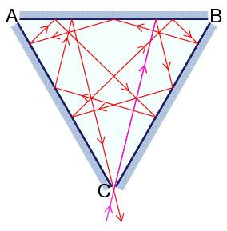

Three mirrors are arranged in the shape of an equilateral triangle, with their reflective surfaces pointing inwards. There is an infinitesimal gap at each vertex of the triangle through which a laser beam may pass.
Label the vertices $A$, $B$ and $C$. There are $2$ ways in which a laser beam may enter vertex $C$, bounce off $11$ surfaces, then exit through the same vertex: one way is shown below; the other is the reverse of that.

There are $80840$ ways in which a laser beam may enter vertex $C$, bounce off $1000001$ surfaces, then exit through the same vertex.
In how many ways can a laser beam enter at vertex $C$, bounce off $12017639147$ surfaces, then exit through the same vertex?
solve(bounces=11) → ?solve(bounces=12017639147) → ?solve(bounces=1000001) → ?